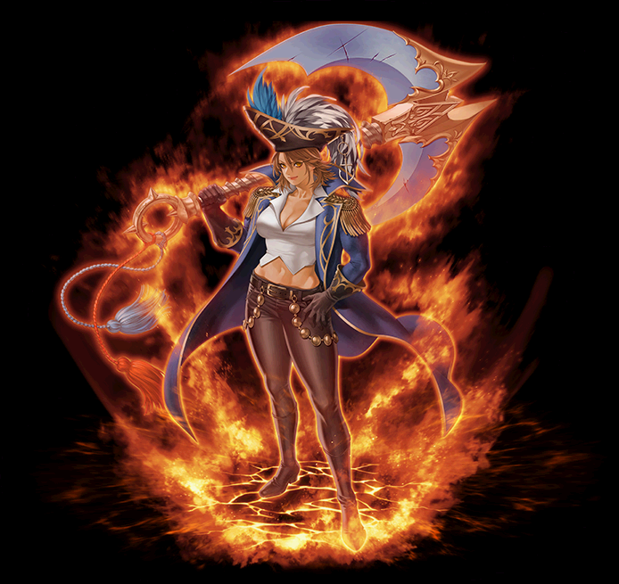

2022～ キャプテン 覚醒スキル一覧
ワールウィンド
レイジングウェーブ
チェイスストライカー
ワールウィンド
| ワールウィンド | ||||||||
|---|---|---|---|---|---|---|---|---|
| [専用パッシブ] キャプテンディグニティー | ||||||||
| 必要スキル | なし | |||||||
| スキル説明 | キャプテンの威厳で攻撃が当たる度に鎖系の攻撃が強力になる。 物理ダメージと打撃回数が徐々に増加する。 |
|||||||
| パワーアップ形態 | なし | |||||||
| スキル効果 |
- 鎖系スキルが命中する度に物理ダメが10%ずつ増加し、重複によって打撃回数が最大2回まで増加する。 - 5～9重複：1回増加、10重複：2回増加 |
|||||||
レイジングウェーブ
チェイスストライカー
| チェイスストライカー | ||||||||
|---|---|---|---|---|---|---|---|---|
|  | ||||||||
| アンカーマスター | ||||||||
| 必要スキル | なし | |||||||
| スキル説明 | 錨の真のマスターとなり、誰よりも巧みに錨を扱う。 アンカープル、ハードアンカレジの打撃範囲が増加する。 |
|||||||
| パワーアップ形態 | なし | |||||||
| スキル効果 |
元スキルに攻撃範囲が追加されます。 [アンカープル]: 5M / [ハードアンカレジ]: 2.5M |
|||||||